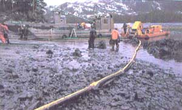

DISPATCHES
One way to shape the news is to buy it.
Last April was cruel Prince William Sound.
A.J. Liebling-in the opinion of many, the most talented American journalist ever to ply the trade-once observed that freedom of the press is guaranteed only to those who own one. He knew that editorial influence has a way of filtering down from the top, despite the profession's avowed reportorial "objectivity."
Someone at Exxon must have stumbled onto that bit of wisdom. Last November, Exxon's principal spill-cleanup subcontractor, Veco International, Inc., bought the Anchorage Times, Alaska's second-biggest newspaper. And was Veco embarrassed by this bald-faced attempt to purchase itself some good press? Not exactly. Veco chairman Bill Alien told reporters that the "big reason" his company bought the Times was to ensure that Alaska would have a prodevelopment newspaper.
Alaska will have more than a prodevelopment newspaper. It will also have one owned by a nonunion employer who a few years back paid the biggest fine ever levied against a company in Alaska for violation of campaign-contribution laws. As columnist Eleanor Randolph mused in the Washington Post recently, "So how will the Times cover state politics after Veco takes over on December 14? How will they cover the oil industry? The developers? The unions?"
It's difficult to predict whether the stunt will work. The Washington Times, started by, bankrolled by, and a mouthpiece for Rev. Sun Myung Moon's Unification Church, has lost pots of money and produced negligible influence in national affairs. And people in Alaska, as everywhere else, tend to carry a healthy load of skepticism. As Fred Dickey, a former editor of the Anchorage Times, said of the sale, "The first time the kibosh gets put on a story negative to the oil industry, it's going to go through this town like corn through a goose."
Hurricanes and earthquakes are often measured by how much it will cost to fix the damage they caused. There are other prices-harder to quantify, sometimes more difficult to pay.
Hugo is a case in point. Its terrible winds uprooted millions of trees and plants as it swept across the Caribbean and north along the Atlantic seaboard. It killed thousands of small animals and birds. Most areas and most species will recover, of course. Hugo is neither the first nor the last big hurricane to hit those parts, and big winds are as natural as quakes, fires, and rain.
The kicker conies in areas supporting species that are extra-vulnerable already, like the endangered red-cockaded woodpecker, for example. The woodpecker has been nearly extirpated through loss of habitat and the suppression of naturally occurring fire in the habitat left to it. The last stronghold of the red-cockaded woodpecker was the Francis Marion National Forest in South Carolina, the only place where the birds' numbers were increasing. Hugo took care of that. It felled 90% of the woodpeckers' nesting trees. It killed 375 of the 591 clans (groups of three to eight birds) outright and damaged 211 others. Only six clans escaped unscathed.
It would be one thing if there were thriving populations of red-cockadeds elsewhere, as there were until a century or so ago. Alas, that's not the case. There are red-cockaded woodpeckers still scattered from Florida to Texas, but their numbers are declining, and prospects are bleak. The destruction of Francis Marion National Forest in coastal South Carolina may have been the final, fatal blow.
Against the advice of the departments of State and Energy and the Environmental Protection Agency, President Bush has sided with his chief of staff, John Sununu, and is recommending further study of the greenhouse effect, rather than action. Since scientific discussion about global warming has already been reduced to when and how much, not whether, Mr. Bush has decided that doing something about the environment would fit better in some other president's budget. By the time a leader has the guts to take action, climate warming most likely will be right around the comer and breathing hotly down our necks.
It strikes me there's a great deal more self-congratulation going on among American politicians than is justified, and that a reassessment of our wonderfulness is perhaps in order. I'm speaking of the incredible events unfolding in Eastern Europe and the perception that capitalism has triumphed over communism.
Communism does indeed seem to be on a quick slide downhill, but one must hope that the countries throwing off that onerous yoke won't mindlessly shoulder another, seeing the good but missing the drawbacks of living in the West, where citizens seem to be so much better off.
We are better off, of course. Some of us. But at what cost? What about the homeless? What about the people hooked on crack and other drugs? And what about the effect that American capitalism has had on our once-abundant natural resources?
Our system may be the best so far devised, and it may not. It certainly is anything but ideal and is quite palpably unsustainable. With the Marxist nations reassessing their economies-their entire cultures, for that matter-now would be a good time to reassess ours, too, and begin nudging it in a direction that will get us off our collision course with natural systems.
And let's hope, with ourselves as with the red-cockaded woodpecker, that it isn't too late.
Tom Turner is staff writer for the Sierra Club Legal Defense Fund, an independent environmental law firm in San Francisco.
|
 MICHAEL BAYTOFF/BLACK STAR |
|
|